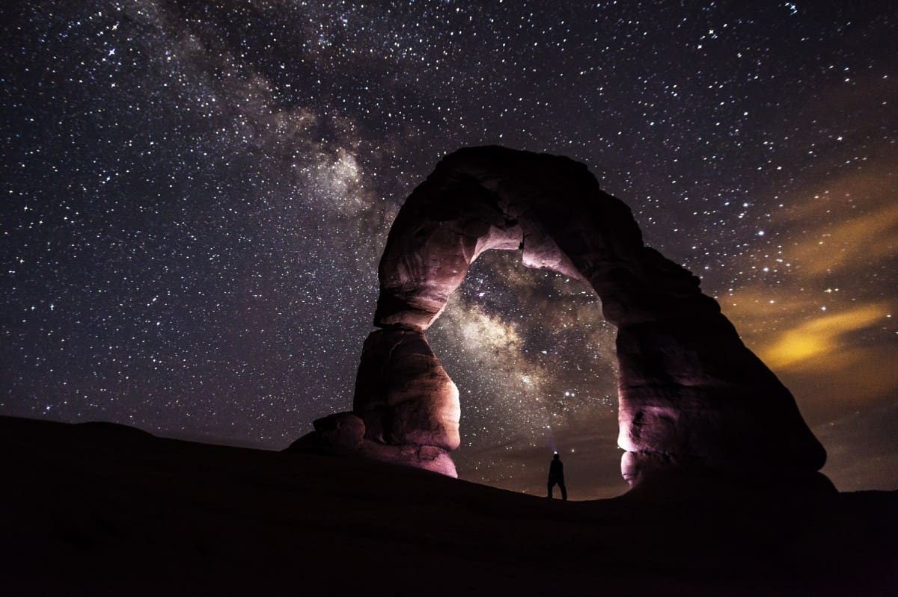

MERT SEFA ÜNAL
ACADEMIC / TRAINING
EDUCATIONS
 In 2009-2013, I completed Istanbul University Geophysical Engineering department with third place. Training my internship things up Turkish Petroleum Corporation (TPAO) 'I realized in. I had the opportunity to work in my internship, in Ankara and on the field. I was more interested in seismic working methods.
In 2009-2013, I completed Istanbul University Geophysical Engineering department with third place. Training my internship things up Turkish Petroleum Corporation (TPAO) 'I realized in. I had the opportunity to work in my internship, in Ankara and on the field. I was more interested in seismic working methods.
I completed my Geophysical Engineering Master's degree in Istanbul University - Cerrahpaşa in 2019. During my graduate education, I worked with my second advisor at and Istanbul Technical University (ITU) to. I completed my education by completing my thesis on “Investigation of tuning effect of wedge structure in seismic reflection method ”. In the scope of the thesis, I wrote a program that creates a synthetic seismic model according to the parameters given on the matlab. In this program, I made the analysis and evaluation of the models produced with different parameters.
 I completed the Master of Occupational Health and Safety (without Thesis) education in 2016-2017. However, my C-class occupational safety expertise certificate that I previously obtained in 2014; I passed the B class occupational safety specialty exam in 2018. You can learn more about the work I have done during the occupational safety expertise period and the experiences I have gained on this site in the Occupational Safety section.
I completed the Master of Occupational Health and Safety (without Thesis) education in 2016-2017. However, my C-class occupational safety expertise certificate that I previously obtained in 2014; I passed the B class occupational safety specialty exam in 2018. You can learn more about the work I have done during the occupational safety expertise period and the experiences I have gained on this site in the Occupational Safety section.
I graduated from Anadolu University Business Administration (Open Education) between 2013-2018. I have benefited from the information I have gained in this area, both in the analysis of business life and in enterprise studies.
I have been studying the Web Design and Coding section between 2018-2020. I started because I thought that this section will add new perspectives to me as I have prepared business analyzes in the field of software as of the industry I work for. I complete this section with the effect of developing myself in the software field and getting to the front-end developer level. You can review my experience and competencies in the field of business analyst on this site on the business analyst page.
Life is a great journey. I learned a lot both in business life and education. I keep learning and improving. I help those who want to learn around me as much as I can. No matter how much we learn, there is little left to the knowledge in the universe. Nevertheless, I want to continue learning as I realize the effect of everything I have learned on thinking differently in the fields I study.